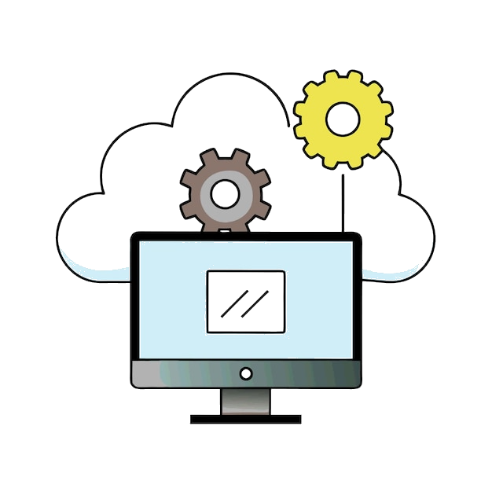

Welcome to my ever-evolving digital playground!
Introduction
This GitHub-hosted portfolio serves as a living collection of projects, ranging from interactive frontend applications to more complex softwares built using various programming languages and frameworks. Some projects are fully functional, while others are still in progress, with many existing only as explorations of different technologies, concepts, and problem-solving approaches.
 This is not a traditional showcase of polished applications. Instead, it reflects my ongoing learning process — a space where I test ideas, refine my skills, experiment, study, and document the steps taken towards pushing the boundaries of understanding various aspects surrounding software development.
Within these pages, you’ll find projects that reflect real challenges, creative solutions, and my long-term commitment towards improving as an all-round developer. Although, some projects may never be "finished" in the conventional sense, each one represents a step forward in my journey of mastering coding, design, and technology. The goal is to expand my expertise across the fields surrounding Information Technology, by learning as much as I can on my own, without relying on the resources that typically come with a specific job within the industry.
Content:
- This sandbox features a variety of frontend applications, prototypes, code snippets, design mockups, contextual webpages, or just simply crafted solutions, all publicly accessible on GitHub.
- While some projects demonstrate complete functionality, others remain open-ended experiments, snapshots of my thinking process, problem-solving strategies, or exploration playgrounds for new technologies.
- Every showcased project has been built independently. The efforts commited are not the subject to collaborative work display, but rather a testament to my ability to learn, adapt, overcome and improve.
The showcased projects reflect hands-on experience with a broad spectrum of tools and technologies used across modern software development, including:


This space evolves alongside my skills and curiosity.